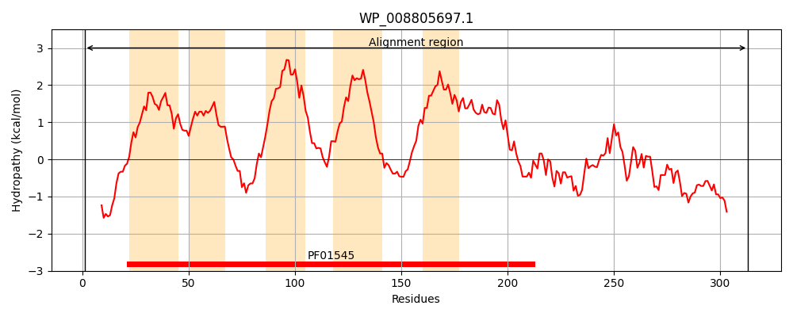
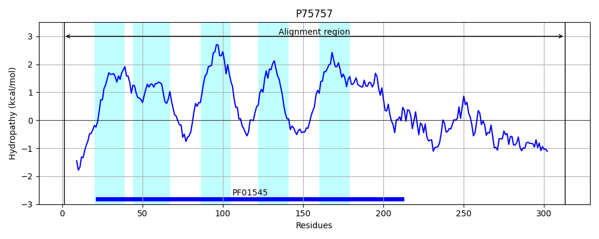
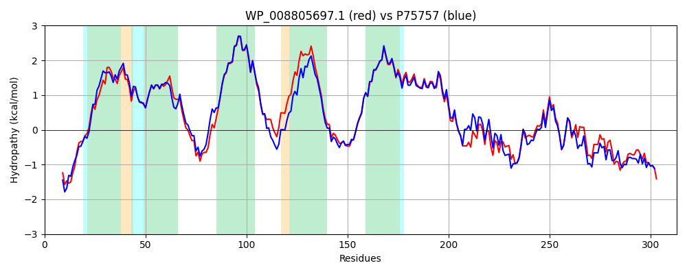

Hit Accession: P75757
Hit TCID: 2.A.4.1.4
Hit Description: gnl|BL_ORD_ID|11402 gnl|TC-DB|P75757|2.A.4.1.4 Zinc transporter zitB - Escherichia coli.
Mach Len: 313
e:0.000000
Query TMS Count : 5
Hit TMS Count: 5
TMS-Overlap Score: 4.800000
Predicted Substrates:CHEBI:3290;cadmium(2+), CHEBI:10113;zinc(2+), CHEBI:5584;hydron
BLAST Alignment:
Score: 1286 , Bit scores: 499 bits, E-value: 2.3e-180, Alignment length: 313, Percentage identity: 77
Query: 1 MAHPHSHSPAQAPDSSNARRLRWAFIVTAGFMLIEAVGGAISGSLALLADAGHMLTDSAALLFALLAVRFASRPPNTRHTFGWLRLTTLAAFLNAIALVVITILIVWEAIQRFQHPQPVAGVTMMVIAVAGLLANVLAFWILHRGSEEQNLNVRAAALHVLGDLLGSVGAIVAAVVILTTGWTPVDPILSVLVSCLVLRSAWRLLKESLNELLEGAPRSLDVAALQRDIRRSIPEVRDVHHVHVWLVGEKPVMTLHVQVVPPHDHDALLNRILHFLEHKYEIEHATVQMEYQPCSGPECHLNTMHAGHDHHHH 313
MAH HSH+ + P+ +NARRL +AF VTAGFML+E VGG +SGSLALLADAGHMLTD+AALLFALLAV+F+ RPP RHTFGWLRLTTLAAF+NAIALVVITILIVWEAI+RF+ P+PV G MM IAVAGLLAN+L+FW+LH GSEE+NLNVRAAALHVLGDLLGSVGAI+AA++I+ TGWTP DPILS+LVS LVLRSAWRLLK+S+NELLEGAP SLD+A L+R + R IPEVR+VHHVHVW+VGEKPVMTLHVQV+PPHDHDALL++I H+L Y+IEHAT+QMEYQPC GP+CHLN +GH HHHH
Sbjct: 1 MAHSHSHTSSHLPEDNNARRLLYAFGVTAGFMLVEVVGGFLSGSLALLADAGHMLTDTAALLFALLAVQFSRRPPTIRHTFGWLRLTTLAAFVNAIALVVITILIVWEAIERFRTPRPVEGGMMMAIAVAGLLANILSFWLLHHGSEEKNLNVRAAALHVLGDLLGSVGAIIAALIIIWTGWTPADPILSILVSLLVLRSAWRLLKDSVNELLEGAPVSLDIAELKRRMCREIPEVRNVHHVHVWMVGEKPVMTLHVQVIPPHDHDALLDQIQHYLMDHYQIEHATIQMEYQPCHGPDCHLNEGVSGHSHHHH 313 | Protein Hydropathy Plots: |
|---|
|  |  |
Pairwise Alignment-Hydropathy Plot:
|
|---|
|  |